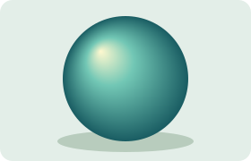

A highlight has a home. Move it with scripts enabled, then explore the light from 25% to 400%.
One off-center highlight gives this pearl a little depth.
Light from the left.
The same highlight follows an ellipse and a rounded outline. Each uses its own geometric bounds.
Left: repeat starts over. Right: reflect turns around. Both keep their rings at every zoom.
The first color fills a small focal circle. The gradient spreads from its edge through shared user coordinates.
Transparency lets the grid emerge as the glow fades. The edge contributes no color of its own.

This pearl arrived as a separate SVG image. Its highlight stays on the left while the page's light moves.